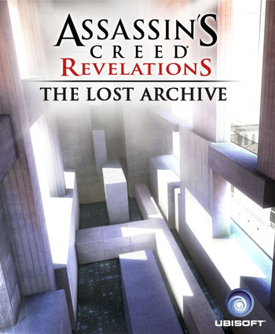

Developer: Ubisoft Montreal
Platform: Xbox 360, Playstation 3, PC
During his time in the Black Room, Desmond Miles relived the memories passed to him by a virtual construct of Clay Kaczmarek, his predecessor in the Animus Project. The memories related to Clay becoming a member of the Assassins, being assigned to infiltrate Abstergo Industries' Animus Project laboratory in Italy, and discovering what Warren Vidic hoped to achieve by exploring the genetic memories of various Assassin figures.Lucy Stillman, an Assassin herself, had been placed within the facilty to rescue Clay when his mission was complete. In his memories, Clay recalled his father's disregard for his career goals, demanding that Clay should instead become an engineer to provide for his family. Clay believed that his father's focus on wealth pushed his mother away from the family.Clay eventually realised that Vidic was using these genetic memories to discover the locations of the Pieces of Eden in the modern era. In particular, Vidic focused on locating an Apple of Eden, which was meant to be launched aboard a satellite to control the minds of humanity across the Earth. Clay also discovered Lucy discussing her true loyalty to the Templars with Vidic, and revealed her actual motives, which were to remove Desmond from the Abstergo facility and transport him to a more comfortable environment, where she would use the Assassins' resources to allow Desmond to discover the location of another Apple and recover it for the Templars.Lucy, having sworn to protect Clay, wiped the security feed showing that he had seen their discussion, but did not let him leave the facility, to prevent her true allegiances from being discovered. The memories continued in a loop, until Desmond collected the scattered memory fragments, which revealed Clay emailing his father and telling him not to worry about his disappearance, because he had found a greater purpose to serve, foreshadowing his suicide.